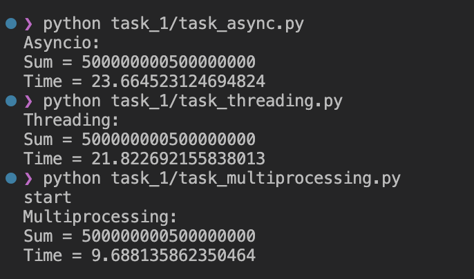
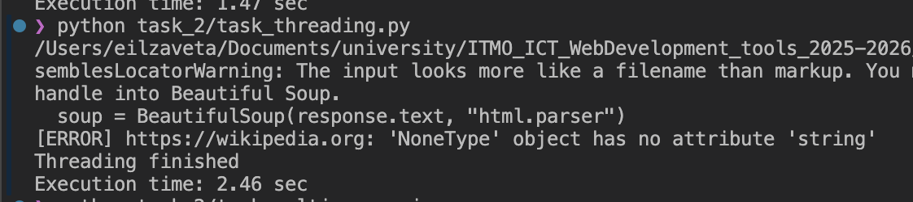
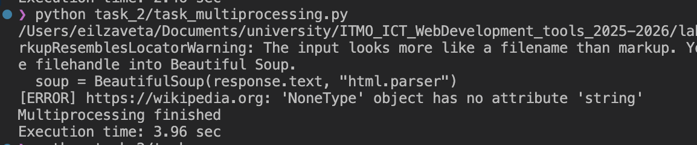
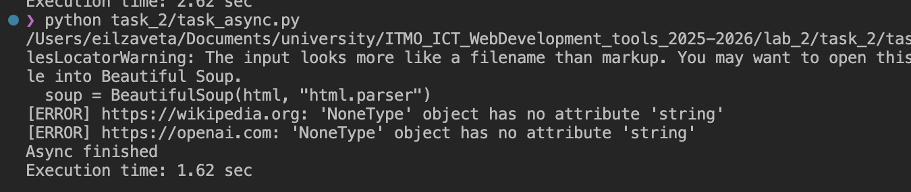

Лабораторная работа 2. Потоки. Процессы. Асинхронность.
Цель работы: понять отличия потоками и процессами и понять, что такое ассинхронность в Python.
Задание 1. Различия между threading, multiprocessing и async в Python
Задача: Напишите три различных программы на Python, использующие каждый из подходов: threading, multiprocessing и async. Каждая программа должна решать считать сумму всех чисел от 1 до 10000000000000. Разделите вычисления на несколько параллельных задач для ускорения выполнения.
threading
import threading
import time
N = 1000000000
# N = 10000000000000
NUM_THREADS = 4
results = [0] * NUM_THREADS
def calculate_sum(start, end, index):
local_sum = 0
for i in range(start, end + 1):
local_sum += i
results[index] = local_sum
if __name__ == "__main__":
chunk_size = N // NUM_THREADS
threads = []
start_time = time.time()
for i in range(NUM_THREADS):
start_num = i * chunk_size + 1
if i == NUM_THREADS - 1:
end_num = N
else:
end_num = (i + 1) * chunk_size
thread = threading.Thread(
target=calculate_sum,
args=(start_num, end_num, i)
)
threads.append(thread)
thread.start()
for thread in threads:
thread.join()
total_sum = sum(results)
end_time = time.time()
print("Threading:")
print("Sum =", total_sum)
print("Time =", end_time - start_time)
multiprocessing
import multiprocessing
import time
N = 1_000_000_000
# N = 10000000000000
NUM_PROCESSES = 4
def calculate_sum(start, end):
local_sum = 0
for i in range(start, end + 1):
local_sum += i
return local_sum
if __name__ == "__main__":
chunk_size = N // NUM_PROCESSES
tasks = []
for i in range(NUM_PROCESSES):
start_num = i * chunk_size + 1
if i == NUM_PROCESSES - 1:
end_num = N
else:
end_num = (i + 1) * chunk_size
tasks.append((start_num, end_num))
print('start')
start_time = time.time()
with multiprocessing.Pool(NUM_PROCESSES) as pool:
results = pool.starmap(calculate_sum, tasks)
total_sum = sum(results)
end_time = time.time()
print("Multiprocessing:")
print("Sum =", total_sum)
print("Time =", end_time - start_time)
async
import asyncio
import time
N = 1_000_000_000
# N = 10000000000000
NUM_TASKS = 4
async def calculate_sum(start, end):
local_sum = 0
for i in range(start, end + 1):
local_sum += i
return local_sum
async def main():
chunk_size = N // NUM_TASKS
tasks = []
for i in range(NUM_TASKS):
start_num = i * chunk_size + 1
if i == NUM_TASKS - 1:
end_num = N
else:
end_num = (i + 1) * chunk_size
tasks.append(
asyncio.create_task(
calculate_sum(start_num, end_num)
)
)
results = await asyncio.gather(*tasks)
return sum(results)
start_time = time.time()
total_sum = asyncio.run(main())
end_time = time.time()
print("Asyncio:")
print("Sum =", total_sum)
print("Time =", end_time - start_time)
Результаты выполнения:

| Подход | Время |
|---|---|
| threading | 21.82 сек |
| multiprocessing | 9.69 сек |
| asyncio | 23.66 сек |
Для CPU-bound задачи лучший результат показал multiprocessing (9.69 сек), поскольку он использует несколько независимых процессов и позволяет выполнять вычисления параллельно на разных ядрах процессора. threading оказался значительно медленнее (21.82 сек) из-за GIL, который не позволяет нескольким потокам одновременно выполнять Python bytecode в CPU-bound задачах. asyncio показал результат 23.66 сек, так как асинхронность эффективна для I/O-bound операций, а не для вычислений.
Задание 2. Параллельный парсинг веб-страниц с сохранением в базу данных
Задача: Напишите программу на Python для параллельного парсинга нескольких веб-страниц с сохранением данных в базу данных с использованием подходов threading, multiprocessing и async. Каждая программа должна парсить информацию с нескольких веб-сайтов, сохранять их в базу данных.
Для парсинга использовались URLs:
URLS
URLS = [
"https://example.com",
"https://python.org",
"https://github.com",
"https://stackoverflow.com",
"https://wikipedia.org",
"https://openai.com",
"https://reddit.com",
"https://news.ycombinator.com",
"https://docs.python.org",
"https://pypi.org",
"https://fastapi.tiangolo.com",
"https://sqlmodel.tiangolo.com",
"https://realpython.com",
"https://www.bbc.com",
"https://www.cnn.com",
"https://www.nytimes.com",
"https://www.mozilla.org",
"https://www.apple.com",
"https://www.microsoft.com",
"https://www.amazon.com",
]
Данные записываются в таблицу Skills:
class Skill(SQLModel, table=True):
id: int = Field(default=None, primary_key=True)
title: str
description: Optional[str]
Подключение к БД для threading и multiprocessing:
DATABASE_URL = f"postgresql://{DB_USER}:{DB_PASS}@{DB_HOST}/{DB_NAME}"
engine = create_engine(DATABASE_URL)
Подключение к БД для async:
DATABASE_URL = f"postgresql+asyncpg://{DB_USER}:{DB_PASS}@{DB_HOST}/{DB_NAME}"
engine = create_async_engine(DATABASE_URL, echo=False)
AsyncSessionLocal = sessionmaker(engine, class_=AsyncSession, expire_on_commit=False)
threading
def parse_and_save(url):
try:
response = requests.get(url, timeout=10)
soup = BeautifulSoup(response.text, "html.parser")
title = soup.title.string.strip()
skill = Skill(
title=title + ' [threading]',
description=f"Parsed from {url}"
)
with Session(engine) as session:
session.add(skill)
session.commit()
except Exception as e:
print(f"[ERROR] {url}: {e}")
threads = []
start_time = time.time()
for url in URLS:
thread = threading.Thread(target=parse_and_save, args=(url,))
threads.append(thread)
thread.start()
for thread in threads:
thread.join()
multiprocessing
def parse_and_save(url):
try:
response = requests.get(url, timeout=10)
soup = BeautifulSoup(response.text, "html.parser")
title = soup.title.string.strip()
skill = Skill(
title=title + ' [multiprocessing]',
description=f"Parsed from {url}"
)
with Session(engine) as session:
session.add(skill)
session.commit()
except Exception as e:
print(f"[ERROR] {url}: {e}")
if __name__ == "__main__":
start_time = time.time()
with multiprocessing.Pool(4) as pool:
pool.map(parse_and_save, URLS)
async
async def parse_and_save(client, url):
try:
async with client.get(url) as response:
html = await response.text()
soup = BeautifulSoup(html, "html.parser")
title = soup.title.string.strip()
skill = Skill(
title=title + " [async]",
description=f"Parsed from {url}"
)
async with AsyncSessionLocal() as session:
session.add(skill)
await session.commit()
except Exception as e:
print(f"[ERROR] {url}: {e}")
async def main():
async with aiohttp.ClientSession() as client:
tasks = []
for url in URLS:
tasks.append(
asyncio.create_task(
parse_and_save(client, url)
)
)
await asyncio.gather(*tasks)
start_time = time.time()
asyncio.run(main())
end_time = time.time()
Результаты выполнения:



| Подход | Время |
|---|---|
| threading | 2.46 сек |
| multiprocessing | 3.96 сек |
| asyncio | 1.62 сек |
1) asyncio - самый быстрый, потому что задача I/O-bound: ожидание HTTP-запросов и работы базы данных. Asyncio эффективно переключается между задачами без создания потоков и процессов.
2) threading — потоки хорошо подходят для сетевых операций, а во время I/O GIL не мешает работе
3) multiprocessing — самый медленный, потому что для I/O-bound задач создание отдельных процессов почти не приносит пользы.